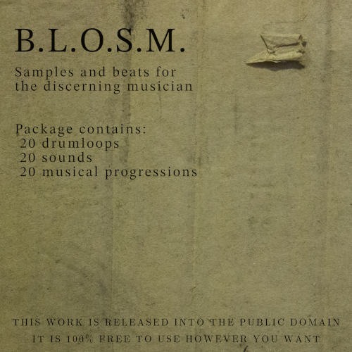

|
B.L.O.S.M. 
DOWNLOAD
BT01 - 110BPM 4/4 "Pedal Down"
BT02 - 78BPM 4/4 "Day-Tripper"
BT03 - 140BPM 4/4 "Squeaky"
BT04 - 180BPM 4/4 "Punk Shit"
BT05 - 145BPM 4/4 "Driver"
BT06 - 100BPM 4/4 "Up & Down"
BT07 - 80BPM 4/4 "Lay Back"
BT08 - 100BPM 4/4 "Battle Form"
BT09 - 140BPM 4/4 "Space Cadet"
BT10 - 92BPM 4/4 "Earth Falls Into Sun" [with variations]
BT11 - 82BPM 4/4 "Jacob's Ladder" [with variation]
BT12 - 150BPM 6/4 "Pig March"
BT13 - 90BPM 4/4 "Simple"
BT14 - 50BPM 4/4 "Karkiya"
BT15 - 160BPM 4/4 "Heavy Machinery" [with variation]
BT16 - 112BPM 7/4 "Dirigible"
BT17 - 105BPM 4/4 "3/4 of the Time..."
BT18 - 80BPM 4/4 "Back and Forth"
BT19 - 96BPM 4/4 "A Man of the Fame, A Man of the People"
BT20 - 135BPM 3/4 "Waltz"
PR01 - 100BPM 4/4 "Quick Blues 1"
PR02 - 100BPM 4/4 "Quick Blues 2"
PR03 - 100BPM 4/4 "Quick Blues 3"
PR04 - 120BPM 3/4 "Lever Johnny" [with variation]
PR05 - 140BPM 7/4 "Rising Ghosts"
PR06 - 120BPM 4/4 "Setting Sun in the Land of Drought" [with variations]
PR07 - 120BPM 4/4 "Garnish"
PR08 - 140BPM 4/4 "Novocain"
PR09 - 150BPM 4/4 "A R P E G G I O"
PR10 - 140BPM 4/4 "Define 'Music'"
PR11 - 70BPM 4/4 "The Streets of Cairo"
PR12 - 120BPM 4/4 "Have You Seen the Yellow Sign?" [with variations]
PR13 - 90BPM 3/4 "Frigid Outskirts"
PR14 - 110BPM 4/4 "Super Ball"
PR15 - 153BPM 4/4 "Desert as Desolation" [with variations]
PR16 - 94BPM 6/4 "Ghost Regret"
PR17 - 140BPM 4/4 "Starship Intrigue"
PR18 - 70BPM 4/4 "Cloud Services 4050AD"
PR19 - 90BPM 4/4 "Flesh-Press Factory"
PR20 - 90BPM 4/4 "Brian?"
SD01 - "Basso" [hit]
SD02 - "rrrrr" [hit]
SD03 - "Ring-a-Ding" [hit]
SD04 - "Hi-Hello" [hit]
SD05 - "Trashy Hat" [hit]
SD06 - "String Perc" [hit]
SD07 - "Doubleclang" [hit]
SD08 - "Dry clap" [hit]
SD09 - "POP!" [hit]
SD10 - "Echo Alarm"
SD11 - "Digital Howl"
SD12 - "Pressure Valve"
SD13 - "Toil&Trouble"
SD14 - "Lightly Fried O" [with variation]
SD15 - "Skree!"
SD16 - "C2 Distorted Bass"
SD17 - "B3 Engine Drone"
SD18 - "Peg"
SD19 - "Lighter Than Air"
SD20 - "Bumpy"
All music by Jack Levin.
ALL CONTENT ON THIS WEBPAGE IS LICENSED UNDER CC BY-SA 4.0
|